This vignette shows every visualization and metric in the package on
the same ground, so they can be compared directly. Each function takes
the path to a terrain model and writes a raster, and every distance it
takes is in metres. The short descriptions here are a starting point;
each help page explains how the method works, how to tune it, and which
settings suit which terrain, and ?rvtr summarises which to
use where.
The terrain is a 400 m square of the Hünstollen at 1 m, from the terrain model of Lower Saxony. A steep, curving edge drops from a field on higher ground in the south-west, crossed by ditches, to lower and uneven ground in the east, and tracks run across the slopes. The area is wooded, but a terrain model shows the bare ground beneath the trees. For the landscape around it, a 4 km square centred on the same place is fetched at 10 m, which also gives 400 × 400 cells. Both are downloaded once, since every figure below reads them:
area <- sf::st_bbox(c(xmin = 572492, ymin = 5714542, xmax = 572892, ymax = 5714942),
crs = 25832)
dem <- rvt_data_lgln(area, "dtm", download = TRUE)
landscape_area <- sf::st_bbox(c(xmin = 570690, ymin = 5712740,
xmax = 574690, ymax = 5716740), crs = 25832)
landscape <- rvt_data_lgln(landscape_area, "dtm", res = 10, download = TRUE)
outline <- function() { # the 400 m square, on a landscape map
rect(area[["xmin"]], area[["ymin"]], area[["xmax"]], area[["ymax"]], lwd = 2)
}Each figure’s code shows the palette and stretch used, as a starting point for your own. The panels are 400 × 400 pixels: one pixel per metre for the 400 m square, one per 10 m for the landscape.
Shading and sun
rvt_hillshade() lights the terrain from one direction
and is the most familiar picture of relief. Anything running parallel to
the light fades out, and slopes facing away from it turn dark.
rvt_multi_hillshade() lights from four directions at once,
so less is hidden and no side is left in deep shadow.
rvt_shadow() shows true cast shadow for one sun position:
white where the sun reaches, black where terrain blocks it.
All three light the terrain from the north-west by default, here with the sun 25 degrees high for the shadow. The sun never stands there in Central Europe; the north-west is a display convention, because relief lit from the top of the image reads correctly, while light from below makes hills look like hollows.
rvt_hillshade(dem) |> rvt_plot(main = "rvt_hillshade()", max_dim = 400)
rvt_multi_hillshade(dem) |> rvt_plot(main = "rvt_multi_hillshade()", max_dim = 400)
rvt_shadow(dem, sun_elevation = 25) |> rvt_plot(main = "rvt_shadow()", max_dim = 400)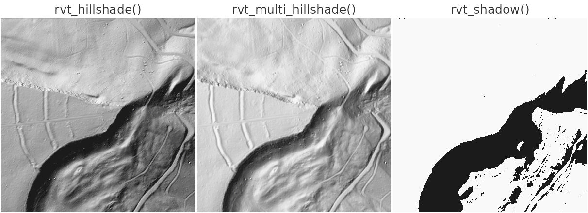
rvt_daylight() and rvt_insolation() use the
real path of the sun through the year instead.
rvt_daylight() counts the hours of direct sun per day, here
averaged over a year, taking both cast shadow and the way each slope
faces into account. rvt_insolation() measures the solar
energy received, in kWh/m² per year. Hours and energy are not the same
thing: a slope facing away from the sun can be lit for many hours at a
low angle while receiving little energy.
Both are theoretical. They assume a clear sky, and on a terrain model they see only the bare ground: this area is wooded, so in reality far less sun reaches the ground than shown. For the light falling on the treetops, use a surface model instead.
rvt_daylight(dem) |>
rvt_plot("Inferno", main = "rvt_daylight()", max_dim = 400, range = c(5, 12))
rvt_insolation(dem) |>
rvt_plot("Inferno", main = "rvt_insolation()", max_dim = 400, range = c(600, 2000))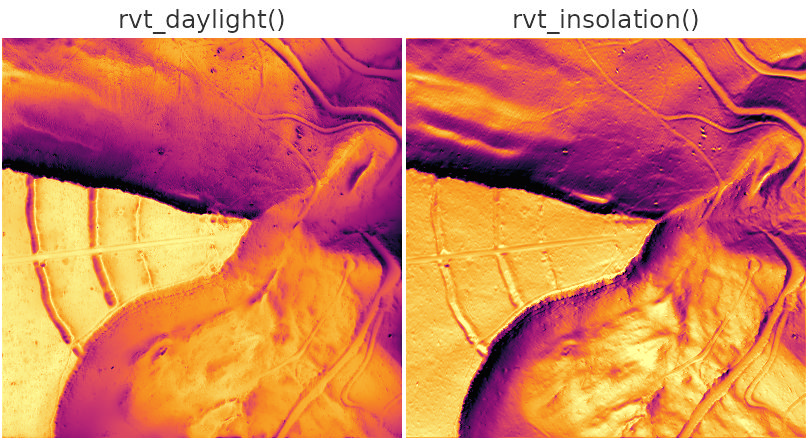
Sky and horizon
These metrics look along many directions from each cell and find how high the horizon rises. Nothing is lit from one side, so no feature disappears in shadow.
rvt_svf(), the sky-view factor, is the share of the sky
visible from each cell: 1 on open flat ground, lower in hollows and at
the foot of slopes. It works like an overcast sky.
rvt_asvf() weights the sky towards one direction, giving a
sense of light like a hillshade while still hiding nothing.
rvt_sky_illumination() models the diffuse light actually
received, counting the direction each slope faces as well as the
horizon.
rvt_svf(dem) |> rvt_plot(main = "rvt_svf()", max_dim = 400, range = c(0.65, 1))
rvt_asvf(dem) |> rvt_plot(main = "rvt_asvf()", max_dim = 400, range = c(0.65, 1))
rvt_sky_illumination(dem) |>
rvt_plot(main = "rvt_sky_illumination()", max_dim = 400, range = c(0.6, 1))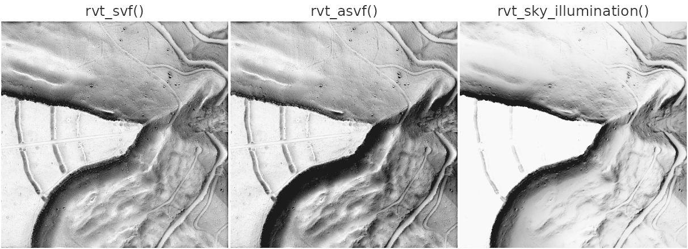
rvt_openness() measures the angle of the open sky above
each cell, averaged over all directions, in degrees. Convex features
such as banks and edges come out bright.
rvt_openness_negative() does the same for the terrain
turned upside down, so ditches, tracks and hollows come out bright
instead.
rvt_openness(dem) |>
rvt_plot(main = "rvt_openness()", max_dim = 400, range = c(75, 92))
rvt_openness_negative(dem) |>
rvt_plot(main = "rvt_openness_negative()", max_dim = 400, range = c(75, 92))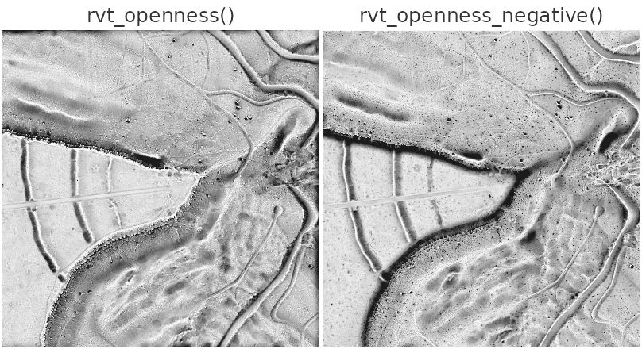
Local relief
These metrics remove the broad shape of the landscape and keep what stands above or sinks below it, in metres or in units of local variation. Signed results read best with a diverging palette and a range centred on zero; below, red is above the surroundings and blue below them.
rvt_slrm(), the simple local relief model, is each
cell’s height above or below the average of its surroundings, here
within 20 m; rvt_tpi() is the same function under its other
common name, the topographic position index. rvt_msrm()
combines this over a range of scales, so features of different sizes
show at once. rvt_dev() divides the difference by how rough
the surroundings are, so a small bank on smooth ground and a larger one
on rough ground read alike.
rvt_slrm(dem) |>
rvt_plot("Blue-Red 3", main = "rvt_slrm()", max_dim = 400, range = c(-2, 2))
rvt_msrm(dem) |>
rvt_plot("Blue-Red 3", main = "rvt_msrm()", max_dim = 400, range = c(-0.5, 0.5))
rvt_dev(dem) |>
rvt_plot("Blue-Red 3", main = "rvt_dev()", max_dim = 400, range = c(-1, 1))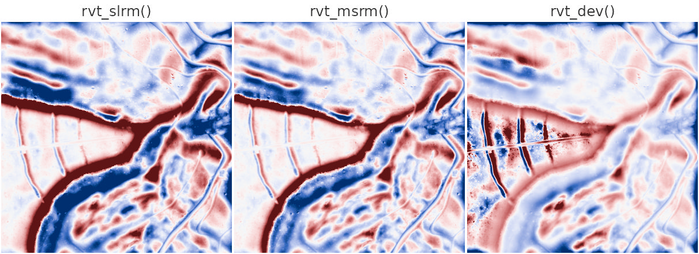
rvt_local_dominance() shows how far the surroundings
fall away below a cell, which brings out low, spread-out features.
rvt_mstp() colours each cell by the scale at which it
stands out: blue for fine, green for medium, red for broad features. Its
default scales reach several kilometres, far beyond this square, so the
scales here are cut down to fit.
rvt_local_dominance(dem) |>
rvt_plot(main = "rvt_local_dominance()", max_dim = 400, range = c(0.5, 2.5))
rvt_mstp(dem, local = c(3, 21, 2), meso = c(23, 103, 18), broad = c(123, 223, 50)) |>
rvt_plot(main = "rvt_mstp()", max_dim = 400)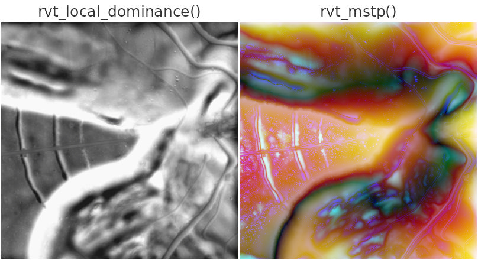
Surface shape
rvt_slope() is steepness in degrees, drawn here with
flat ground light and steep ground dark. rvt_aspect() is
the compass direction each slope faces, from 0 to 360 degrees, so it
needs a palette whose ends meet. rvt_curvature() is how
sharply the ground bends: positive (red) where it is convex, such as the
top of an edge, negative (blue) where it is concave, such as the foot of
a slope. Measured from each cell’s immediate neighbours at 1 m, it also
picks up every small bump, hence the speckled look; the sections below
show what its different types show, and how to measure it at a broader
scale. rvt_log(), the Laplacian of Gaussian, is curvature
with smoothing built in: it first smooths the ground by
sigma metres, so edges of that size stand out and smaller
noise does not. Like curvature, it is positive on banks and edges and
negative in ditches and hollows.
rvt_slope(dem) |>
rvt_plot(rev(hcl.colors(256, "Grays")), main = "rvt_slope()", max_dim = 400,
range = c(0, 45))
rvt_aspect(dem) |>
rvt_plot(rainbow(256), main = "rvt_aspect()", max_dim = 400, range = c(0, 360))
rvt_curvature(dem) |>
rvt_plot("Blue-Red 3", main = "rvt_curvature()", max_dim = 400,
range = c(-0.2, 0.2))
rvt_log(dem, sigma = 3) |>
rvt_plot("Blue-Red 3", main = "rvt_log()", max_dim = 400, range = c(-0.1, 0.1))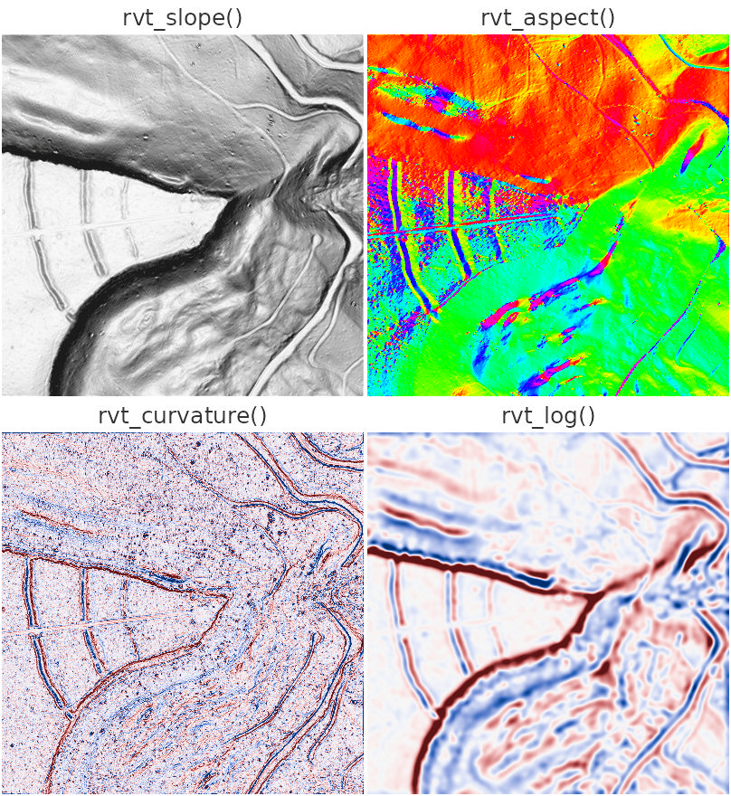
Landforms
rvt_geomorphons() sorts each cell into one of ten
landform classes by comparing it with the terrain along eight
directions, up to reach metres away. The classes are listed
in rvt_geomorphon_classes; the colours below follow the
usual convention, from greys for flat ground and reds for peaks and
ridges through yellows for slopes to greens and blues for hollows,
valleys and pits.
Landforms are a matter of scale. On the 400 m square at 1 m, looking 20 m around, almost everything is slope, with the ditches and parts of the edge picked out as narrow lines. On the 4 km landscape at 10 m, looking 500 m around, the larger forms appear: level plateaus in grey, their rims as shoulders, the ridge on which the square lies, and the network of valleys cut into them. Here ground counts as flat below 3 degrees rather than the default 1, because the plateau tops are gently tilted.
classes <- c("#dcdcdc", "#380000", "#c80000", "#ff5014", "#fad23c",
"#ffff3c", "#b4e614", "#3cfa96", "#0000ff", "#000038")
rvt_geomorphons(dem, reach = 20) |>
rvt_plot(classes, main = "1 m, reach = 20", max_dim = 400, range = c(1, 10))
rvt_geomorphons(landscape, reach = 500, skip = 20, flat_threshold = 3) |>
rvt_plot(classes, main = "10 m, reach = 500", max_dim = 400, range = c(1, 10))
outline()
plot.new()
legend("center", legend = names(rvt_geomorphon_classes), fill = classes,
bty = "n", cex = 1.1)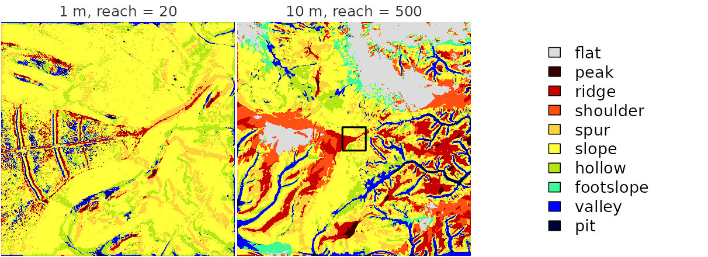
Types of curvature
“Curvature” covers several different questions about how the ground
bends, and rvt_curvature() answers 14 of them through
type. The six below are the ones most often useful. They
are measured over a 3 m window (radius = 3) to calm the
noise, and each has its own stretch, because their values differ in
size.
-
profile, the default, is measured straight down the slope: positive where the slope steepens towards the brow of an edge, negative where it eases off at its foot. It picks out breaks of slope, such as the banks of the ditches. -
tangentialis measured across the slope, along the contour: positive on spurs, where water would spread apart, negative in hollows and gullies, where it gathers. -
meanaverages the bending over every direction, so it shows whether the ground bulges outwards or dishes inwards overall. -
minimalandmaximalare the least and the most the ground bends in any direction. Along a ditch the ground bends hard across it and barely along it, so ditches stand out inminimal(blue) and banks and edges inmaximal(red). -
shape_indexdescribes the form alone, however gently or sharply the ground bends: −1 for a pit, −0.5 a valley, 0 a saddle, +0.5 a ridge and +1 a dome. Because intensity is ignored, even the faintest bumps on flat ground show, which gives the busy texture.
types <- c(profile = 0.1, tangential = 0.05, mean = 0.05,
minimal = 0.1, maximal = 0.1, shape_index = 1)
for (type in names(types)) {
rvt_curvature(dem, type = type, radius = 3) |>
rvt_plot("Blue-Red 3", main = type, max_dim = 400,
range = c(-types[[type]], types[[type]]))
}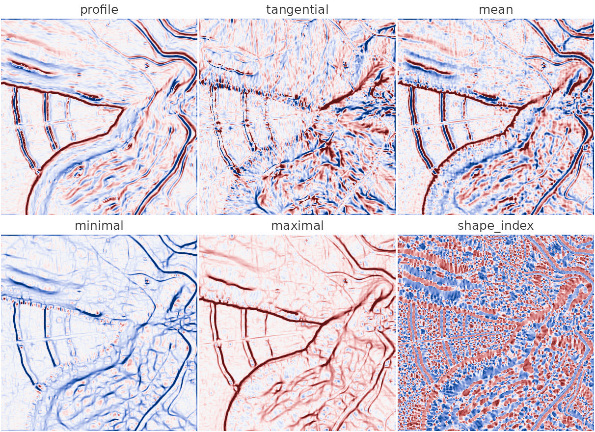
The remaining types, among them gaussian (domes and
bowls against saddles), unsphericity and
twisting, are described in ?rvt_curvature.
Choosing a scale
Every metric has a scale: the size of the features it responds to, set by the cell size of the terrain model together with the window or distance the metric looks at. The same metric at a different scale answers a different question.
Local and landscape
Below, curvature is measured over the same window of 7 × 7 cells
twice. On the 400 m square at 1 m (radius = 3), the window
spans 7 m, and curvature finds the banks of the ditches, the tracks and
the sharp rim of the edge. On the 4 km landscape at 10 m
(radius = 30), the window spans 70 m, and those details are
gone: curvature now traces the valleys cut into the plateaus in blue,
with their rims in red. The outline marks the 400 m square. Values at
the landscape scale are ten times smaller, since curvature is measured
per metre, so the stretch differs too.
rvt_curvature(dem, radius = 3) |>
rvt_plot("Blue-Red 3", main = "1 m cells, radius = 3", max_dim = 400,
range = c(-0.1, 0.1))
rvt_curvature(landscape, radius = 30) |>
rvt_plot("Blue-Red 3", main = "10 m cells, radius = 30", max_dim = 400,
range = c(-0.008, 0.008))
outline()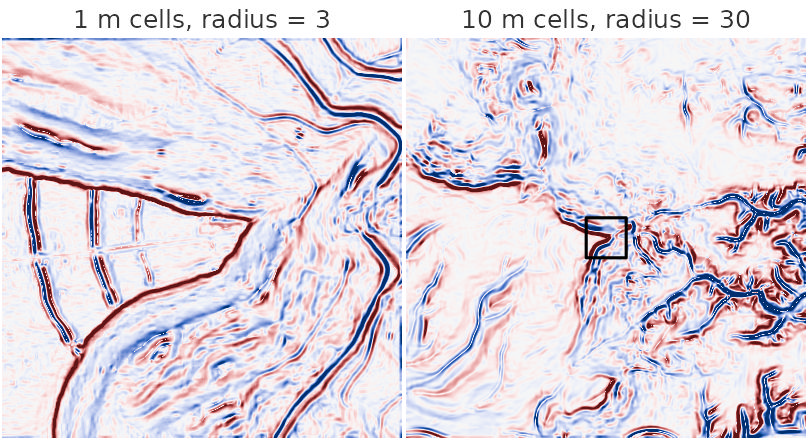
A coarser terrain model is also far quicker to process, so for a
landscape question rvt_resample(), or fetching at a coarser
res, is the efficient route, rather than a very large
window on fine data.
Window size
Within one terrain model, radius sets the size of the
surroundings a cell is compared with. The local relief models show this
well. A small radius picks out tracks, ditches and single
mounds; a large one shows whole slopes and edges:
rvt_slrm(dem, radius = 5) |>
rvt_plot("Blue-Red 3", main = "rvt_slrm(radius = 5)", max_dim = 400,
range = c(-0.5, 0.5))
rvt_slrm(dem, radius = 30) |>
rvt_plot("Blue-Red 3", main = "rvt_slrm(radius = 30)", max_dim = 400,
range = c(-4, 4))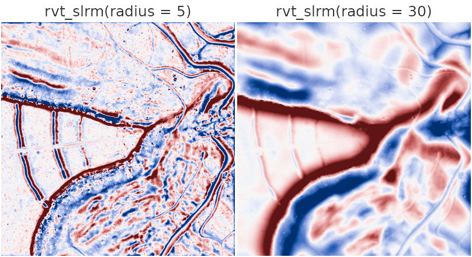
How far to look
The sky and horizon metrics, and the sun metrics, have
reach instead: how far they look for the horizon, in
metres. A short reach shows small features close by; a long reach adds
the shape of the wider landscape: the lower ground below the edge and in
the east darkens, because the higher ground around it closes off the
horizon. A long reach stays affordable, because distant terrain is read
from coarser copies of the terrain model; ?rvt_reach
explains how.
rvt_openness(dem, reach = 10) |>
rvt_plot(main = "rvt_openness(reach = 10)", max_dim = 400, range = c(75, 92))
rvt_openness(dem, reach = 100) |>
rvt_plot(main = "rvt_openness(reach = 100)", max_dim = 400, range = c(70, 90))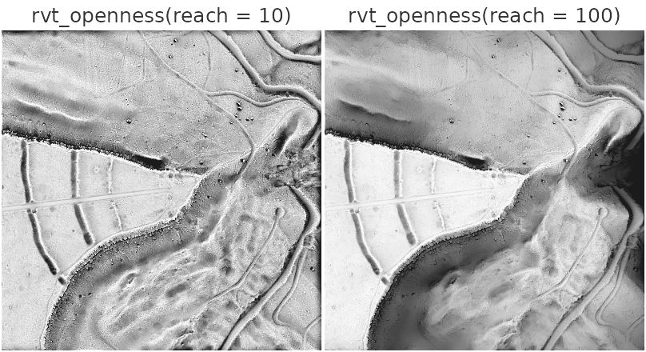
Composites
No single metric shows everything, and they combine well.
rvt_vat() builds a ready-made composite from a hillshade,
slope, openness and sky-view factor, and rvt_blend() lets
you build your own; the blending vignette
covers both.